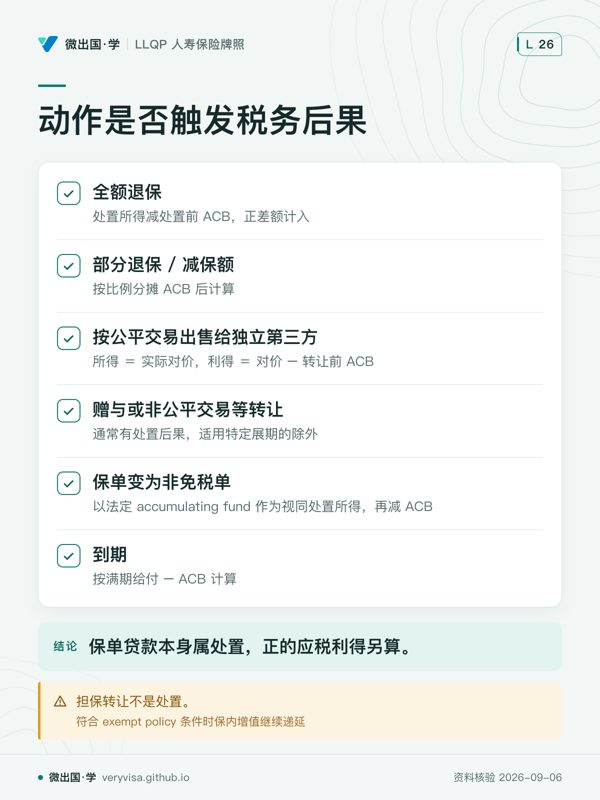

核实日期：2026-09-06｜考纲位置：Life c2（分析产品，30%）与 c3（落实推荐，25%）交叉考点，考试口径单独用一整章讲。 复核周期：本页含多个联邦《所得税法》(Income Tax Act, ITA) 年度数字，至少按年度复核（下次 2027-01-31）；数字来源见文末「来源」。
寿险这一章最容易让人误解的一句话，是「保险免税」。这句话只对了三分之一。 身故给付（death benefit）确实几乎永远免税，这是寿险产品最核心的卖点之一；但保单在被保险人生前被「动过」——退保、贷款、转让、变更所有权——却常常要交税，而且交多少税，取决于一个大多数客户听都没听过的数字：调整后成本基础（adjusted cost basis, ACB）。这一页要讲清楚三件事：为什么死亡给付免税而处置常常不免税、ACB 怎么算、以及企业与遗产规划里怎么合法地用这套规则把税负降到最低。读完你应该能做到：向客户解释「我借自己保单的钱要交税吗」而不出错；给一份退保或部分提取算出应税利得的大致数量级；判断一笔企业持有的寿险身故给付能有多少免税进入股东口袋。
ℹ️
两套口径要先分清
本章数字几乎全部属于联邦《所得税法》层面的现行规则，不因居住省份而异（唯一挂 BC 的例外是遗嘱认证费，第二节会讲）。所以本页不存在「考试口径按哪省答、现行按哪省办」的省级分流，但存在另一种分流——考试口径 2022 年数字 vs 2026 年现行数字。考试按当期指定考试口径及题干给定条件作答，不能推断实际试卷统一使用某一旧年度，柜台对客户必须用现行数字。凡两者不一致，本页并列写出并标明来源。
一、制度设计与底层逻辑：为什么死亡给付免税，处置却不一定免税
寿险身故保险金本金通常不计入受益人的所得，这是考试口径讲解一般个人寿险的基础；不能因此声称所有死亡相关付款和所有保单类别都毫无税务后果。ITA s.148(2)(b) 对符合其条件的非 exempt 保单规定死亡前视同处置，附带利息及公司收款后的股东分配也另判。解释「免税」时，要先说明收款人、款项性质以及是否为普通 exempt 寿险。

但这条定性只覆盖「身故这一刻」。保单在被保险人生前发生的一切价值变动，逻辑完全不同：现金价值（cash surrender value, CSV）的增长，本质上是投保人向保险公司预付的一笔钱在里面生息——这就落回了「所得」的范畴。如果什么都不管，一张永久寿险就会变成一个「披着保险外衣、实际免税增值的储蓄账户」，这既不是立法者的本意，也会造成对其他储蓄工具（如非注册投资账户）的税负不公平。免税测试（exempt test）与保单处置课税这两套机制，存在的理由就是划一条线：保险该有的保障功能免税，投资功能超过保障所需的部分不免税。
这条底层逻辑落到日常执业上，变成两个必须先分清的概念：
- 保单利得（policy gain）＝处置所得 − ACB，100% 计入应税收入——这与大众印象里「资本利得只算一半」的规则完全不是同一套。很多客户（以及不少刚入行的代理人）会下意识把「保险」和「投资」的税务优惠混为一谈，误以为退保拿到的钱也能享受资本利得 50% 计入率——这是本章第一号误解，也是第七节的第一条考试陷阱。
- ACB 是税法成本，不等于已缴保费。G2/G3 简化示例常从累计保费减累计 NCPI 起算，还须计入红利、贷款、还款及其他法定调整。你缴的保费里，一部分买了纯保障（也就是这些年里保险公司真正承担死亡风险的成本），NCPI 是税法规定方法计算的纯保险净成本，不等于保险人账单上实际扣的 COI；最后 ACB 要采用保险人的完整税务记录。
二、2026 现行政策与数字：三笔考试口径没赶上的联邦税制变化
税务原理考试口径定稿于 2022 年，四年间联邦有三件事直接影响本章内容，考试口径要么写的是旧数字，要么完全没提。
2.1 资本利得计入率：一场「差点变了」的政策摇摆（三态表）
资本利得的一般计入率，现行 ITA s.38(a) 仍为 50%；条文另列合格捐赠等例外。2024 年曾提出提高计入率的方案，历史提案不能替代现行法。考试与实务都要先识别收益类别：寿险保单利得按相应规则计入所得，不能因名字里有「利得」就套资本利得的一半计入率。laws-lois.justice.gc.ca
2.2 终身资本利得豁免（LCGE）：要读处置年度那一列
| 考试口径 2022 说 | 2026 现行 | 考场答·柜台做 |
|---|---|---|
| 合格小型企业股份上限 $913,630；合格农渔业财产另有旧上限 | 2026 LCGE 上限为 $1,275,000；对应一半计入率的扣除上限为 $637,500。2025 的 $1,250,000 不可直接沿用 | 题目按明确给定的年度与数值；实务还须扣除个人已用额度并核资产资格 |
依据是 CRA 年度指数表的 2026 列，不能拿报税页中「for 2025」的句子背书次年数值。canada.ca
⚠️
不是任何 CCPC 股份都合格，也不是所有合伙权益都不合格
普通经营合伙权益通常不属此豁免范围；符合定义的家族农场或渔业合伙权益，可以属于合格农渔业财产。必须核实资产、持有及使用等条件，不能仅凭「公司」或「合伙」两个字判。laws-lois.justice.gc.ca
2.3 AMT（替代最低税）：慈善抵免不能沿用旧提案
AMT 要另算调整后的所得和可用抵免，再与通常所得税比较。大额捐赠、资本利得或其他优惠可能影响结果，但「捐赠很多」本身不能推出一定多缴或一定节税。
| 项目 | 旧提案/旧材料 | 现行判断与用途 |
|---|---|---|
| 慈善捐赠税收抵免在 AMT 中的计入比例 | 2023 年材料曾使用 50% | ITA s.127.531(c) 现行为 4/5，即 80%；不能把其他抵免的 1/2 套到慈善捐赠上 |
| 年度豁免与计算参数 | 不同年度的数字不同 | 按纳税年度的 T691 及现行法完整计算，不用旧年度豁免额估算客户的最终税单 |
本次法条核对确认的是慈善抵免比例；完整 AMT 个案还需税务顾问计算。laws-lois.justice.gc.ca
2.4 联邦税阶与基本个人免税额（BPA）：结构性下调，不只是通胀调整
| 口径 | 数值 |
|---|---|
| 考试口径 2022 说 | 15%(首$50,197)/20.5%/26%/29%/33%(超$221,708) |
| 2026 现行 | 14%(首$58,523)/20.5%(至$117,045)/26%(至$181,440)/29%(至$258,482)/33%(超过) |
（CRA，CRA 官方税率表直引）最低档税率由 15% 降为 14%，这是结构性下调（2025 年中起联邦「中产减税」分阶段落地），不是单纯的通胀调整起征点——值得单独记一笔，因为它会拉低本章多处案例里「边际税率 × 保单利得」的税负算法结果。
联邦 BPA（基本个人免税额）现行（2026）：净收入 ≤$181,440 者可claim 最高 $16,452，随收入递减至净收入 ≥$258,482 者的最低 $14,829（CRA 年度指数表2026列，canada.ca）；考试口径脚注引用的 2022 年数字是 $14,398。
2.5 BC 遗嘱认证费：考试口径数字仍然现行（罕见）
| 口径 | 数值 |
|---|---|
| 考试口径 2022 说 | 遗产估值 ≤$25,000 免征；$25,000–$50,000 部分每 $1,000（或不足部分）收 $6；超 $50,000 部分每 $1,000 收 $14 |
| 2026 现行 | 与考试口径完全一致，未发现费率变化（BC Laws，BC Laws Probate Fee Act s.2(3) 原文直引） |
这是本章少数「考试口径数字仍现行」的条目，实务与考场答案在这一点上不冲突。考试口径另提及的 $208 一般申请费，已回源：BC Supreme Court Civil Rules（B.C. Reg. 168/2009）附录 C 附表 1 第 1 项「commencing a proceeding」（提起诉讼/申请，含遗嘱认证申请）现行费用为 $200，不是 $208（BC Laws — Supreme Court Civi…）。这两笔是不同性质的费用——附表 1 的 $200 是法院提交费，与本表的 $6/$14 每 $1,000 分档认证费是分开收取的两笔钱，应相加计算法院端成本，但不能混成同一费率；考试口径E211 Appendix A确实印$208，但尚无可核的历史法源解释该差额，不能推断其来自通胀调整。现行Item 1为$200，小额遗产豁免与其他服务费另查。
三、实务流程：处置什么时候触发税、怎么算、免税测试为什么存在
3.1 保单处置触发表
| 动作 | 是否触发税务后果 | 应税利得怎么算 |
|---|---|---|
| 全额退保（full surrender） | 是 | 按税法确定的处置所得减处置前 ACB，正差额计入；有旧贷款时向保险人取得税务测算，不能直接用净到账现金替代处置所得 |
| 部分退保 / 减保额（partial surrender） | 是 | 按比例分摊 ACB 后计算，比例分摊公式因保单代次（G1/G2/G3）而异，本页不展开公式细节 |
| 保单贷款（policy loan） | 贷款本身属处置；正的应税利得另算 | 贷款 ≤ ACB：无应税利得，ACB 相应减少；贷款 > ACB：超出部分 ＝ 应税利得，ACB 降至零 |
| 担保转让（collateral assignment，用保单做贷款抵押） | 否，不是处置 | 符合 exempt policy 条件时保内增值继续递延，这是它与「保单贷款」「绝对转让」最关键的区别 |
| 按公平交易出售给独立第三方（不属赠与、分配等特别规则） | 是，按实际对价 | 所得 ＝ 实际对价，利得 ＝ 对价 − 转让前 ACB |
| 赠与或非公平交易等转让 | 通常有处置后果，适用特定展期的除外 | s.148(7) 按保单法定价值、对价公允市值、转让前 ACB 三者最高值确定处置所得；不能概括为一律按 CSV laws-lois.justice.gc.ca |
| 生前转让给配偶/同居伴侣（双方转让时均为加拿大税务居民，并符合 s.148(8.1)） | 一般按 ACB 展期，无当期保单利得 | 转让人视同所得 ＝ 转让前 ACB，利得为零；受让配偶继承相同 ACB；转让人可主动申报选择退出展期 |
| 无对价直接转让给子女（非年金；被保险人为转让人的子女或受让人的子女） | 符合 s.148(8) 时按 ACB 展期 | 与配偶展期同理；转入信托不适用，必须直接过户给子女本人 |
| 保单变为非免税单 | 是，视同处置 | 符合 s.148(2)(d) 时，以法定 accumulating fund 作为视同处置所得，再减 ACB；不能一律用 CSV 替代，须由保险人测算 |
| 到期（保单满期，如 T-100 之外的储蓄型合同） | 是 | 按满期给付 − ACB 计算 |
3.2 免税测试机制：为什么保司每年都要跑一次
免税测试（exempt test）的目的不是限制客户能存多少钱，是区分「这份合同主要是不是为了提供保障」。做法是保险公司每个保单周年日拿一份假想的基准保单（exempt test policy, ETP）——按对应代次的假设缴费期、满期年龄及精算参数构造的基准合同——与实际保单依税法计算的 accumulating fund 比较。这个税务量不一定等于账户价值或可领取现金；超过允许上限且未按规则修正，说明这份合同已经越来越像一个投资账户而不是保险合同，就会被要求做出调整（如提取部分账户价值），否则会永久丧失免税身份——本页不展开测试本身的精算公式，因为代理人执业中通常不需要手算，保险公司会在实际处置时提供这些数字；但理解「为什么有这道测试」，是判断客户能不能往万能寿险里多存钱的第一把尺子。这条测试还有一道配套的反倾入规则，专门防止客户绕开逐年测试、一次性趸缴一大笔钱去做「短期避税储蓄」——两道规则加在一起，把「保险的免税额度」和「投资的应税额度」划出了一条随时间移动、但始终存在的线。
3.3 ACB 计算算例（自拟场景，示例）
算例一：全额退保
温哥华的陈太太 2005 年买了一张 G2 分红终身寿险（1982-12-01 后、2017-01-01 前取得，适用 G2 计算规则）。到 2026 年，假设无贷款、红利现金领取或其他 ACB 调整，她累计缴纳保费 $42,000，保险公司告知她这些年累计的纯保险成本（NCPI）合计 $14,000，现金价值（CSV）已涨到 $58,000。她决定全额退保：
- ACB ＝ 累计保费 − 累计 NCPI ＝ $42,000 − $14,000 ＝ $28,000
- 处置所得 ＝ CSV（无贷款无欠费）＝ $58,000
- 应税保单利得 ＝ 处置所得 − ACB ＝ $58,000 − $28,000 ＝ $30,000
- 若陈太太当年边际税率 30%，这笔退保要多交税 $30,000 × 30% ＝ $9,000（这是单看这一笔保单利得按边际税率估算的近似值，未计入 AMT、其他抵免或当年其他所得变动的影响；她当年的最终应纳税额仍须把这 $30,000 并入全年所得后整体重算）
算例二：保单贷款超过 ACB
素里的李先生持有一张 G3 万能寿险（2016-12-31 后取得），当前 CSV $50,000，ACB $15,000。他向保险公司借款 $22,000 用于个人生活开支（非用于缴纳本单保费）：
- 贷款 $22,000 与 ACB $15,000 比较：贷款超出 ACB 的部分 ＝ $22,000 − $15,000 ＝ $7,000，这部分是应税利得
- 贷款中 $15,000 不产生应税利得，但会把 ACB 降到零
- 两年后李先生用一笔投资分红偿还了 $10,000：这笔还款可以抵扣他此前已申报的 $7,000 利得对应的应税所得（全额抵完），剩余 $10,000 − $7,000 ＝ $3,000 计入 ACB——只看这次还款且假设期间没有其他保费、NCPI 或处置调整，ACB 因此成为 $3,000；实际两年后的 ACB 须用期间全记录计算（不是零，是这笔还款把它重新垫高了一点）
✕
保单贷款属于处置，无应税利得不等于未处置
这是本章最容易在客户面前说错话的一条。客户问「我能不能借自己保单里的钱」，正确答案永远分两截：税法把保单贷款列入处置；在本例无其他调整时，超过 ACB 的部分产生应税保单利得（laws-lois.justice.gc.ca）。很多代理人会把「保单贷款免税」当成一句可以无条件说的话，而 ACB 会随着保单年限增长而逐渐降低（因为 NCPI 逐年累积扣减），同一张保单，年轻时借同样金额可能免税，年老后借同样金额可能就要交税。
贷款利息能不能抵税，看的是借来的钱花在哪里，不是看抵押物是什么。李先生如果把借来的 $22,000 投进能产生应税收入的投资（如收租的物业、派息股票），还要满足利息扣除的其他条件；保单贷款须由保险人在 T2210 核实当年已付利息且未计入 ACB，并在报税截止日前完成，才可按适用规则扣除；如果借来的钱是纯个人消费用途，或者投进的是只指望资本利得（不产生利息/租金/股息）的资产，这笔利息就不能抵税。这条规则和「贷款本金是否超过 ACB」是两件独立的事，题干如果只问「贷款利息能不能抵扣」而不问「本金是否应税」，答案要单独判断借款的用途，不能顺着上一问的结论直接套。
3.4 保单红利：先问拿去做什么
ITA s.148(2)(a) 将保单红利作为处置的一类，再按立即用于保费或偿还保单贷款的金额等作相应处理。直接领取现金红利可能有税务后果；把红利留在生息账户，账户利息通常需要申报。购买已缴清增额保险、抵缴保费、现金领取与留存生息并不是同一种处理，保险人应提供实际保单数据及税务凭证。laws-lois.justice.gc.ca rbcinsurance.com
不能把「大部分客户选择累积」写成「红利只有极少数特殊情况才会应税」。对客户解释时，先记录选择的红利用途，再核保单代次、ACB 和当年的税务处理。
3.5 企业持有寿险与 CDA 算例
企业持有寿险最常见的场景是「买卖协议融资」（funding a buy-sell agreement）：公司为股东投保，身故后用赔款回购已故股东的股份，避免家属被迫贱卖或让外部人突然成为共同股东。这里最值钱的机制是资本红利账户（capital dividend account, CDA）——一个记录公司「已经免税、可以免税分配给股东」的名义账户。
算例：一家符合资本红利规则的加拿大私人公司，三名股东均为加拿大税务居民，经营温哥华建筑业务，为其中一名股东购买了一张公司持有的 G3 终身寿险，保额 $1,000,000。该股东身故当年保单 ACB 为 $150,000：
- 身故给付 $1,000,000 本身全额免税进入公司（第一节讲的定性规则，不因受益人是公司而改变）
- 但能进入 CDA、之后可以免税分配给股东的部分，是 身故给付 − ACB ＝ $1,000,000 − $150,000 ＝ $850,000
- 剩余的 $150,000（等于 ACB 那部分）虽然公司拿到手上不用交税，但不能计入 CDA，不能仅凭这笔赔款增加 CDA；公司其余 CDA 余额、股东借款或实缴资本等另有规则，不能推断这 $150,000 永远只能按应税股利取出
定期险没有现金退保价值，也可能有非零 ACB。CDA 应按保险人出具的实际数据及公司适用税法计算；公司向股东支付资本红利还需完成相应选择申报，不是收到赔款后自动全额免税分配。
完整适用条件（这一步考试口径通常一笔带过，执业中恰恰最容易漏）：公司要把 CDA 里的余额免税分配给股东，必须依 ITA s.83(2) 完成正式选择——填写 Form T2054，随附董事会决议与分配前 CDA 余额的计算明细；若 CDA 余额里含有寿险赔款部分，还须在附件里披露保单号、收到的赔款金额、ACB 等细节；选择申报必须在股利应付日或实际支付日两者中较早的一个当日或之前完成。未按时作有效选择，不能假定股利免税；s.83(3) 仍允许符合条件的迟报选择并缴迟报罚款，须及时让税务顾问处理——CDA 余额本身足够，不等于分配自动免税，选择申报是必经的法定手续，不是行政形式。
四、2026 市场：永久寿险怎样进入税务与遗产规划
以下是 2026-09-04 回读官网确认的产品实例。各行说明它对应本章的哪个判断；实际销售资格和责任范围仍须核对具体合同。
| 公司与产品线 | 对应本章的判断与使用边界 | 官网出处 |
|---|---|---|
| RBC Insurance · RBC Growth Insurance | 官网将保障、现金价值与非保证分红分开，并提示现金分红可能应税、留存红利的利息应税。讨论提取或借款前，应取得保险人提供的 ACB 与处置测算。 | rbcinsurance.com |
| Equitable · Equimax Estate Builder | 官网将 Estate Builder 与侧重较早现金价值的 Wealth Accumulator 并列。遗产价值与生前流动性是不同目标；应比较保证栏与非保证演示，不能拿分红假设当确定资产。 | The Equitable Life Insurance… |
| iA Financial Group · Genesis | 这条万能寿险产品线把永久保障与储蓄放在同一合同。追加保费、提取资金与维持保险成本相互影响，「税务优惠增值」不代表生前随时提款都免税。 | iA Financial Group |
遗产均衡的出发点是资金何时需要。若家庭主要资产要留给一名子女，寿险可作为向其他子女支付现金的备选来源；使用单人、联合首亡或联合后亡保障，要和纳税及继承事件的时间对应。不能一律说必须买联合后亡，也不能假设所有家庭都可按理想费率承保。
慈善安排要分开看所有权、收据价值与可申报年度。
生前转让给合资格受赠机构并设其为不可撤销受益人，可以构成非现金捐赠，但收据不保证一律按估出的 FMV 开具。机构须核视同公平市值规则及捐赠人所得利益；适用时，价值可能受保单 ACB 限制。日后捐钱给机构缴保费，或经机构同意直接付给保险人，才按合资格捐赠判断收据。与此同时，转让人的保单处置所得要另按 s.148(7) 计算，不能把收据 FMV 与应税处置所得混成同一个数。
若保留所有权，仅指定合资格机构领取身故金，生前保费一般没有这条捐赠收据资格。死亡后的指定捐赠通常视为遗产作出；符合 GRE 等条件时，可按规则分配至遗产年度、死者最后一年或前一年，并非只可在身故当年抵税。受益人若指定为不可撤销，也不能说所有权仍在手就能随时改掉。税务顾问应把处置利得、可用抵免及 AMT 一并计算，再比较两条路径。
公司持有寿险时，保险人给出的实际 ACB 是计算 CDA 增加额的重要输入。定期险没有现金价值，不等于它的 ACB 必定为零；「公司免税收到赔款」也不等于「股东可以不办手续、免税取走全额」。
五、历史变革：从「买了就永远免税」到「每年跑一次测试」
考试口径以最后取得或相关变更时间，把旧保单简化分成 G1/G2/G3。1982 年 12 月 2 日之前取得、且没有导致失去旧待遇的转让或修改者，可能保有 G1 待遇；这不等于任何用途的现金或处置永远免税。G1 的 ACB 简化为累计保费减已付红利，退保等仍须计算保单利得。对老单的税务承诺必须先确认身份仍然保留。
2017 年 1 月 1 日是第二个分水岭。这次改革不是「收紧」而是「更新参数」——精算假设与死亡率表用的还是几十年前的旧数据，早已跟不上加拿大人越来越长的预期寿命，于是国会更新了免税测试背后的精算参数（G3 保单适用），把测试的满期年龄从 85 岁推到 90 岁、缴费年限从 20 年缩短到 8 年。这次更新可能改变不同保单的早期 ACB 轨迹，须用实际测算比较；不能只凭 G2/G3 判定哪份更优惠。原考试口径的比较示例显示早期 NCPI 可能较低（因为新精算参数下 NCPI 早期更低），是「税法变严格未必总是对纳税人更不利」的一个反例。考试口径原文明确提示了这条「既得权」（grandfathering）风险：2017 年之后对一张 G2 保单做某些操作，可能会让它「降级」适用 G3 规则，从而丧失原有的既得权优势。
ℹ️
「G1/G2/G3 保单代次」不是 CLHIA 发布的同名指引
本页的 G1/G2/G3 指的是保单按取得日期分类的税法代次（1982-12-02 前 / 1982-12-02 至 2016-12-31 / 2017-01-01 起，并考虑后续失去旧待遇的情形），是税务与行业圈的通行简称，不是 CLHIA 编号发布的《Guideline G1》（产品披露）、《G2》（个人可变保险合同披露）、《G3》（团体寿险与健康险）——那三份是完全不同主题的正式指引文件，两套「G1/G2/G3」纯属编号巧合，查资料时不要拿错文件。
G2 转用新规则要查 ITA s.148(11)：2016 年后，保单内定期保障转换为永久保障，或加入需要医疗核保的保障，可在该实际触发时点视同新签发。条文对用红利购买、复效及仅为降低费率而核保的情况有明确边界。不能说所有加保一律触发，更不能把 2022 年才发生的转换追溯写成自 2017-01-01 已失去旧待遇。
六、案例
案例一：Sandra 想知道她的保单借款要不要交税（呼应 3.3 算例二的机制，人物与数字均为示例）
列治文的 Sandra 持有一张 2018 年买入的 G3 万能寿险，CSV $35,000，ACB $9,000。她因为家里装修想借 $12,000。代理人应该怎么答：先算出 $12,000 − $9,000 ＝ $3,000，这部分要按她当年边际税率交税；剩下的 $9,000 免税，同时 ACB 降为零。如果 Sandra 后续几年内还清贷款，她可以就已申报的 $3,000 利得申请相应扣除——这也是为什么代理人应该建议客户尽量安排还款计划，而不是让贷款长期挂账。
案例二：配偶展期，选择接受还是主动退出
本拿比的一对夫妻，先生名下有一张 CSV 已涨到 $70,000（ACB $18,000）的分红保单，因家庭财务重组，先生打算把保单转让给太太。假设夫妻转让时均为加拿大税务居民、保单符合 s.148(8.1)，这笔转让默认按 ACB 展期，先生视同所得 ＝ ACB ＝ $18,000（利得为零），太太继承同样的 $18,000 ACB。但如果先生当年恰好有一笔可抵扣的营业亏损，他反而可以主动申报选择退出这次自动展期，假设无对价且法定保单价值为 CSV $70,000，按 s.148(7) 三者最高规则确定处置所得为 $70,000，产生 $52,000 应税利得——用来抵消那笔营业亏损；太太拿到的 ACB 也相应提高到 $70,000。这个 $52,000 只是保单利得本身的数字，是否真的划算取决于他当年的营业亏损额度、边际税率、以及是否触发 AMT——不是「利得越大抵得越多就一定划算」，须整体测算后才能下结论。这条规则展示了「默认规则不一定是最优选择」——代理人的价值恰恰在于判断什么时候应该主动跳出默认路径。
案例三：一份来不及规划的遗产
一位居住在枫树岭的独居长者身故，名下有一张普通寿险保单没有指定具名受益人，赔款进入了遗产。因为没有具名受益人，这笔赔款不享受遗嘱认证豁免，须计入遗产总值一并缴纳遗嘱认证费（按第二节的 $6/$14 每 $1,000 分档计算）；如果这位长者生前明确指定过一位具名受益人（哪怕只是自己的侄女），这笔赔款本可以完全绕开遗嘱认证程序，通常在遗产之外支付给有效受益人，仍须完成理赔及处理可能的指定争议。这个案例经常被用来提醒客户：受益人指定不是一次性的表格填空，是一项每隔几年就该回顾一次的规划动作，尤其是在婚姻状况变化、子女成年、或保单转让之后。
七、考试陷阱与双口径清单
- 死亡给付免税 ≠ 保单现金价值增长免税。前者是永久性质的定性（第一节），后者只在保单通过免税测试的前提下才递延不用按年计提——一旦变为非免税单，账户价值的年度收益就要按年应税。看到题干问「保单增值是否免税」而不是「身故给付是否免税」，先判断问的是哪一个。
- 保单贷款属于处置，超过 ACB 的部分通常产生应税利得（3.3、3.4）。题干如果给出「贷款金额 < ACB」，正确答案通常是「无应税利得」；只有贷款金额明确超过 ACB 时才需要计算差额。
- 担保转让（collateral assignment）不是绝对转让（absolute assignment），前者不触发处置、符合 exempt policy 条件时保内增值继续递延，后者是处置。题干出现「用保单做贷款抵押」多半在考这条区分，而不是在考贷款本身的税务处理。
- 保单利得 100% 计入应税收入，与资本利得 50%（现行）计入率是两套不同规则。看到题干同时提到「保险」与「资本利得」两个词，先判断问的是哪一层——寿险保单退保/贷款产生的从来都是「保单利得」而不是「资本利得」，2024–2025 年那场资本利得计入率之争，从头到尾都没有触及保单利得这条规则。
- 配偶生前展期在双方加拿大税务居民及其他法定条件满足时默认适用；反而是「选择退出」才需要主动申报。题干如果问「转让给配偶默认会怎样」，答案是「自动展期、利得为零」；如果问「什么情况下会产生应税利得」，答案才是「纳税人主动选择退出」。
- 转让给子女的展期，必须是直接过户给子女本人——转入信托、或转给子女的监护人代持，都不适用这条展期规则；无对价转让的被保险人可为转让人的子女或受让人的子女；例如父母把以一个孩子为被保险人的保单无偿转给另一个孩子，也须按 s.148(8) 的完整条件判断。
- LCGE 要核资产资格：合格小型企业股份与合格农渔业财产可适用；普通合伙权益通常不适用，合格家族农渔业合伙权益有例外。
- 保单变为非免税单是「视同处置」，即使投保人没有实际拿到一分钱现金也要交税——这是本章反直觉程度最高的一条，题干常见的干扰项是「既然没有实际提取现金，就不产生税务后果」，这是错的。
术语双语表
| en | zh | 一句机制 |
|---|---|---|
| death benefit | 身故给付 | 通常不计入受益人所得；保单处置、利息及公司再分配要另判 |
| policy gain | 保单利得 | ＝处置所得 − ACB，100% 计入应税收入，与资本利得计入率是不同规则 |
| adjusted cost basis (ACB) | 调整后成本基础 | G2/G3 简化起点为保费减 NCPI，另有贷款、红利等法定调整；使用保险人提供的实际值 |
| net cost of pure insurance (NCPI) | 纯保险净成本 | 按税法精算方法计算的年度纯保险净成本，不等于实际 COI 扣款 |
| disposition | 处置 | 包括退保、保单贷款及部分转让等；是否有应税利得须另算 |
| deemed disposition | 视同处置 | 未必发生实际交易，但税法上按处置对待，如变为非免税单 |
| exempt policy / non-exempt policy | 免税单 / 非免税单 | 免税单账户价值可递延增值；非免税单须按年计提纳税 |
| exempt test | 免税测试 | 每保单周年日比对账户价值与假想基准，判断是否仍以保障为主 |
| exempt test policy (ETP) | 免税测试保单 | 用于计算免税上限的假想基准保单 |
| anti-dump-in rule | 反倾入规则 | 防止一次性趸缴大额保费绕开逐年免税测试 |
| collateral assignment | 担保转让 | 用保单做贷款抵押，不触发处置，符合 exempt policy 条件时保内增值继续递延 |
| absolute assignment | 绝对转让 | 转让保单所有权，触发处置，需计算应税利得 |
| spousal rollover | 配偶展期 | 双方为加拿大税务居民等条件满足时，生前转让可按 ACB 展期，也可选择退出 |
| income attribution rules | 收入归属规则 | 配偶/未成年子女间赠与财产的收益，转让人在世期间归其纳税 |
| capital dividend account (CDA) | 资本红利账户 | 记录公司可免税分配的收入，寿险身故给付超 ACB 部分计入 |
| lifetime capital gains exemption (LCGE) | 终身资本利得豁免 | 抵消处置合格 CCPC 股份/农渔业财产的资本利得，2026 上限 $1,275,000 |
| capital gains inclusion rate | 资本利得计入率 | 现行 50%，2024 曾提案调至 2/3，2025-03 撤销 |
| alternative minimum tax (AMT) | 替代最低税 | 2024 改革后税率 20.5%、豁免额大幅提高，影响高净值捐赠策略 |
| basic personal amount (BPA) | 基本个人免税额 | 每年随通胀调整，高收入者递减适用 |
| charitable donations tax credit | 慈善捐赠税收抵免 | 根据纳税年度、合格捐赠额、所得及特殊规则计算，另核 AMT |
| estate equalization | 遗产均衡 | 用保单给未继承主要资产的子女补足等值份额 |
| probate fee | 遗嘱认证费 | BC 按遗产估值分档收取；具名受益人的保单/年金豁免 |
来源
- Canada Revenue Agency, "Line 30000 – Basic personal amount"（CRA）
- Department of Finance Canada, "Capital gains inclusion rate" 2024-06 backgrounder（加拿大财政部）
- Canada Revenue Agency, "Line 25400 — Capital gains deduction / LCGE"（CRA）
- ITA s.127.531：AMT 基本最低税额抵免，慈善捐赠抵免按五分之四计算（laws-lois.justice.gc.ca）；旧2023提案的二手分析（EY Canada / 交叉 PwC·CIBC·DMCL）仅保留历史用途。
- Canada Revenue Agency, "2026 联邦所得税税率与级距"（CRA）
- CRA 年度指数化表：2026 LCGE、BPA 与税阶（canada.ca），已回官方年度列。
- BC Laws, Probate Fee Act, SBC 1999, c 4, s.2(3)（BC Laws）
- BC Laws, Supreme Court Civil Rules, B.C. Reg. 168/2009, Appendix C Schedule 1 Item 1（BC Laws — Supreme Court Civi…，一般法院提交费现行 $200）
- BMO Insurance, "2017: A New Era for Insurance — Grandfathering Rules for Life Insurance Policies"（BMO Insurance（行业技术公告，非官方立法文本），行业技术公告，G2→G3 降级触发条件）
- Canada Revenue Agency, "Capital dividend accounts"（CRA，CDA 免税分配的 T2054 选择要件）
- Abundance Canada 等多篇行业二手源交叉，"Gift of a Life Insurance Policy to Charity"（Abundance Canada（慈善捐赠顾问机构，行业…，慈善捐赠两条路径的适用条件）
本页知识卡
不看正文也能拿到这一节的核心内容：先看导读，再看图。点图放大，左右翻页。
- 先看先看慈善抵免那一行，旧提案不能直接套进现行判断。
- 易漏LCGE 还须核资产资格与个人已用额度；完整 AMT 个案仍需税务顾问计算。
- 下一步去练习，按题目明确给定的年度与数值作答。

- 先看先看借款相关两处，避免把抵押安排和保单贷款混成一类。
- 易漏配偶和子女的展期都有条件；子女规则不适用于转入信托。
- 下一步去练习，先判有没有处置，再找对应的 ACB 计算。